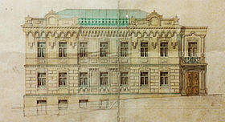

Дім Листовничого

Історія будинку
Будинок, зведений 1888 року на замовлення і кошти дружини київського купця 2-ї гільдії Віри Літошенко за проєктом відомого київського архітектора Миколи Горденіна. На початку ХХ століття маєток належав купцю Захару Мировичу — представнику давнього українського козацького роду, почесному громадянину Києва, котрий крім цього будинку володів ще трьома сусідніми будівлями, які в комплексі утворювали садибу, але домовласник там не жив. З початку ХХ століття до 1906 року у фасадному будинку проживав відомий український хоровий диригент, на той час — викладач церковного співу Київської духовної семінарії, композитор, етнограф та письменник-мемуарист, він же автор спогадів, Олександр Кошиць. Саме знаменитий Український Національний Хор під керуванням Олександра Кошиця 5 жовтня 1922 року уперше виконав «Щедрик» в четвертій обробці (1916) Миколи Леонтовича на концерті в Карнегі-хол в Нью-Йорку, після чого старовинна українська колядка стала відома і популярна в усьому світі; а українська колискова «Ой ходить сон коло вікон», що також виконувалась в репертуарі хору під орудою диригента у Нью-Йорку, надихнула американського композитора Джорджа Гершвіна на написання знаменитої арії «Summertime» для опери «Поргі і Бесс». У 1906—1922 роках на другому поверсі мешкала родина професора Київської духовної академії Опанаса Івановича Булгакова. 1909 року садиба перейшла у власність цивільного інженера Василя Листовничого, який був головним архітектором Київського військового округу. «Ми купували будинок разом з мешканцями» — згадувала дочка Листовничого. Родина нового господаря оселилася на першому поверсі, а частину кімнат, як і попередній власник, здавала в оренду родині Булгакових. У садибі тимчасово мешкав Михайло Булгаков із дружиною та мав свою лікарську практику. У культурній традиції називається домом Булгакова, або за іменем родини головних героїв булгаковського роману «Біла гвардія» — домом Турбіних. Зараз у домі Листовничого розташований музей, присвячений письменнику Михайлу Булгакову. Садиба розташована на Андріївському узвозі, 13 в місті Києві, Україна.
Історія створення
Задовго до створення музею Анатолій Кончаковський — один із творців і перший директор Музею Булгакова, почав збирати речі, що мали стосунок до родини Булгакова та тої доби. Читав він і матеріали, що стосувалися письменника, серед них есе письменника Віктора Некрасова «Дім Турбіних», надруковане 1967 року в радянському тоді журналі «Новий мир». Пошуки були вдалими і в колекцію булгаковських матеріалів Кончаковського перейшли фото родини Булгакових, столові дрібнички, книжки. Головним було те, що зберігся сам будинок. У 1989 році Київський виконком ухвалив Рішення про створення Літературно-меморіального музею Михайла Булгакова. Два роки тривали реставраційні роботи (проєкт — Ірини Малакової.) А 15 травня 1991 р. двері музейного закладу вперше відкрилися для відвідувачів. Сучасний музейний заклад перебрав на себе і функції будинку з вул. Воздвиженській, 10, в Києві, де народився майбутній письменник, бо той вже знищили, зруйнували. Знищив письменник і особистий щоденник, аби не давати приводів для утисків НКВС. Але в часи перебування щоденника в НКВС була зроблена його копія, вона відома під красномовною назвою — «Під п'ятою».